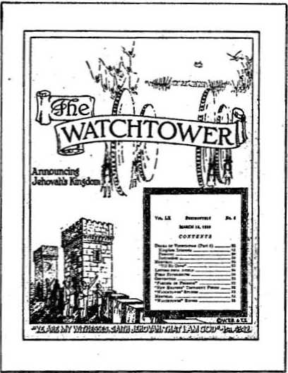

Witness Hollis (Britain) and

Contents
Southwestern Clergy Stand on War
wn i, ■ ili iiif.mjmu1.
Published every other Wednesday by THE GOLDEN AGE PUBLISHING COMPANY, INC.
117 Adams St., Brooklyn, N. Y., U. S. A. President Clayton J. Woodworth
Vice-President Nathan H. Knorr
Secretary and Treasurer Charlea B. Wagner
Five Cante a Copy
fl a, year to the United State* fl.i6 to Canada and all other countries
NOTICE TO SUBSCRIBERS
Remittance*) For your own safety, remit by postal or express money order. When coin.or currency la lost to the ordinary mails, there is no redress, itemlttancee from countries other than those named below may be made to the Brooklyn office, but only by International postal money order.
Receipt of a new or renewal subscription will be acknowledged only when requested. Notice Of Expiration i* sent with the journal one month before subscription expiree. Please renew promptly to avoid loss of copies, •end change of address direct to us rather than to the post office. Tour request should reach us at least two weeks before the date of Issue with which It to to take affect. Bend your old ae well as the new address. Copies will not be forwarded by the post office to your new address unless extra postage fs provided by you.
Publtohed also In Afrikaans, Bohemian, Danish, Dutch, Finnish. French, German, Greek, Hungarian, Japanese, Norwegian, Polish, Portuguese, Spanish, Swedish, Ukrainian; also Special Australian edition in English.
OFFICES FOR OTHER COUNTRIES
England Bi Craven Terrace, London, W. 2
Canada 49 Irwin Avenue, Toronto 5, Ontario Australia 7 Beresford Road, Strathfield. N.S.W.
South Africa 62H Boston House, Cape Town
Entered as second-class matter at Brooklyn, N. T., under the Act of March 3, 1379.
Wpifi* Three Scotsmen were invited to a golden wedding. The first took a packet of "GoZd-FIake” cigarettes, the second a piece of “Gohfen Glory” soap, and the third took his friend, Mr, Gold.
“Phwat are yez doing wid a gun?” asked Pat of Mike. "Sure, and didn’t yez know I wiz a crack shot?” asked Mike. "Crack shot!” replied Pat. “Whoy, yez couldn’t hit that pigeon on that tree.” Mike took aim, fired, and. the bird fell dead. "Well,” said he, "and d’ye think I’m a crack shot now ?” “Och! Away wid yeI” said Pat; "shure the fall wiz enough to kill it.”
An American, an Englishman and a Scotsman were invited to -a silver wedding. The first bought as a present a silver tea service for ten persons..The Englishman, wishing to go one better, bought a silver dinner service for twenty persons. This rather puzzled the Seotty for a bit, but eventually he bought a silver tea-strainer for 500 persons—or more!
An Aberdonian went to Australia. When he returned, after three years, he found his three brothers, all with beards, at the railway station. "What's the big idea?” he asked. “Ye ken quite well ye took the razor awa’ wi’ ye,” was the reply.
Then there was the Scot’s father who went into the garden in the evening of the 24th of December, fired a revolver, and came back to tell the children that Santa Claus had committed suicide.
"I’ve seen better days, sir,” whined the tramp to the Aberdonian.
“Why, so have I,” said the latter, hastily moving off, “but I haven’t time to discuss the weather now.”
A Scotsman’s eon at college had run out of money. He sent the following telegram to his father,.- “No mon no fun your son.” Back came the reply: "How sad too bad your dad.”
Advised by a doctor to travel, Macintosh decided to stay at home and let his mind wander.
“And in His name shall the nations hope.”—Matthew 12:21, A.R.V.
V&lume XX
Brooklyn, N. Y,, WednCtday, May 3, 1939
Number 312
BETWEEN the Transvaal and the Zambesi river lies the self-governing British colony of Southern Rhodesia. Though not so wealthy as the Witwatersrand, it is nevertheless a very rich country. While some people have made fabulous sums, the great majority are comfortably well off—very much' so, compared with other countries. The upper classes have built themselves beautiful residences staffed with plenty of native servants, whose labor is very cheap.
Typically British, these people are slaves to convention. The great thing is to keep company with the ‘‘’right people”, patronize the “proper” institutions and do everything in the orthodox fashion. It is considered correct to support that which is British, but this particular form of patriotism frequently breaks down when any extra expense is involved. Unfortunately — for them —everything connected with the Watch Tower Bible & Tract Society is on the black list—it comes from America, it does not magnify the British Empire and it is condemned by the “people that matter”. Few people realize what an effective and subtle form of censorship this convention really means.
Some Rhodesians would be quite as violently patriotic as the Nazis, if the law did not prevent it, and Jehovah’s witnesses are not the only people who get into trouble either. Recently Professor Gray, of the Witwatersrand University, gave a lecture in Bulawayo on Spain. He criticized the policy of the present British government towards Spain and argued that it wafi obeying the wishes of those capitalist interests which were everywhere trying to stem tl\e advance of movements likely to challenge the regime of private property. Immediately there was a storm of protest in the Press, of which the following letter by a member of Parliament was a masterpiece:
Bulawayo “Chronicle”—
17th September, 1938
(To the Editor, Bulawayo Chronicle)
Sir,—I have just read your report of the lecture given at Bulawayo by Professor J. L. Gray, of Witwatersrand University. One would think that there was enough bilious criticism of Great Britain in the Union without the aid of an imported professor from the London School of Economics. But I cannot believe that any success he may have had with his denigration of the Mother country in the south will be repeated in Rhodesia.
There is nothing new in the Professor’s theories. They are just a rehash of the half-baked pomposities of the “Nation” and the “News Chronicle,”. I dispute every one of his assumptions. In face of the overwhelming evidence of the frantic baboonery that passes for government in Barcelona, to talk of “going to the aid of democracy in Spain” is sheer drivel. If there is anyone left who can swallow that stuff, let. him read among dozens of similar unprejudiced, objective studies of the Spanish affair: “The Epic, of the Alcazar,” by Geoffrey Moss.
ITALY AND SANCTIONS
Nor is it anything but a vicious distortion of the facts to say that Britain “had not Opposed Italy because she was afraid that a social revolution in Italy would endanger the Imperialist investments of Great Britain”. What inhibited British action in the enforcement of effective sanctions against Italy was the discovery that, in spite of the pious phrases of the League, not a gun or a man would be moved by the other nations to Britain’s support, and that we alone would have to fight with an army and navy appallingly weakened by the Professor's Socialist friends and the rotting influence of the Left Wing generally.
“Britain presents a humiliating spectacle.” Brit- ' ain’s conduct “has exposed her to the ridicule and anger of people of all nations”. Her “management of affairs” has “brought manv to regard her as a second-class timid power”. Uot all I know this bunkum is received with roars of applause in Pretoria. It won’t cut any ice in this country.
I have during the last seven years repeatedly visited countries of the North Bea and Me diter*
ranean Littoral. Early this year I travelled in Holland, Belgium, France, Germany and Austria. I am entirely certain that Great Britain’s prestige is as high as ever. For two reasons. First, the character of her leaders, and second, the growing strength of her armed forces.
And may heaven preserve her from ever falling under the dominion of the parlour Bolshies and pink intellectuals who have been harbingers of doom in so many of the other States of Europe. —I am, etc.,
’ L. M. Hastings. Machete, September 14.
i
This is quoted to indicate the typical, intolerant disposition which is to be found among the higher-ups of Southern Rhodesia. Major Hastings was one of the gentlemen who voted in favor of the “Sedition Bill” in the Legislative Assembly two years ago. This Bill was admittedly designed to prevent the publications of the Wateh Tower Bible & Tract Society from entering the Colony, but the courts later decided that this literature was not seditious.
These 100-percent Britishers (or may we say 200-percent?) believe in freedom of speech —except for those who disagree with them!
The proportion of the common people is smaller in Southern Rhodesia than overseas. Wages are good and they don’t have to work nearly so hard as in Britain or even in the Union, for reasons which will presently be explained. '
The man who does most of the hard work is the native. His services are absolutely indispensable, yet his pay is very small—about £1 per month. ,
Europeans like to live in Rhodesia. It is a land of glorious sunshine all the year round. As already mentioned, nearly everyone is comfortably well off and there are plenty of natives to do all the hard work. Life is very free and easy. Plenty of entertaining is done, especially by the well-to-do people, and plenty of alcoholic refreshment is consumed, though one seldom sees a European incapable in public.
Rhodesia is rich in minerals, of which gold is the chief. There are hundreds of small mines, many of them one-man enterprises. Rumors of war and increasing uncertainty send the price of gold soaring, because it is the one thing that any nation will accept at any time in exchange for the necessities of war. Gold is so unlike other commodities, the markets for which, sooner or later, get flooded, due to overproduction meantime (the world apparently can never have enough gold). Men go right into the bowels of the earth to find it and then it is stored in vaults most elaborately protected; and there it remains.
The rearmament program is helping Rhodesia considerably. Asbestos is used in the construction of magazines for storing ammunition and for many other purposes. The asbestos mines are making large profits in the production of this curious substance. The copper mines of the North are very busy keeping the armament factories supplied, and their product commands an excellent price just now.
Another product of the Colony which brings considerable wealth to many is tobacco. It would appear that most of the exports of Rhodesia are used to mankind’s hurt rather than his good.
The Notorious “Watch Tower”1 ♦
Last year two of Jehovah’s witnesses from the Union of South Africa spent six months in the Colony. Their purpose was to advise the European population of the incoming Kingdom of Jehovah in order that those of good will might be sufficiently informed to take their stand on Jehovah’s side before He destroys all that is unrighteous.
As will be easy to understand, the ruling class was not at all keen about this message, but the common people were much more reasonable, though many of these .were badly misinformed concerning the intentions of Jehovah’s witnesses and the Society they represent—the Watch Tower Bible & Tract Society.
Clergymen, missionaries, politicians, a number of the 100-percent Britishers, together with the Press, have succeeded in giving the Watch Tower a really shocking reputation.
The popular view has been that the Wateh Tower is a sort of native communist-religious sect, backed by European agitators, out to eause trouble and generally against the government. A few influential businessmen have told the writer that their information is that an American Negro is at the head of the Watch Tower, while others have tales of American Negroes coming over to save their black brothers from the oppression of the white man— all under the direction of the Wateh Tower. The most fantastic stories circulate among responsible men, yet most of them admit that they are merely repeating what they have heard or read in the newspapers. Several highly-placed officials in the Native Affairs Department have admitted that any trouble among natives wdth a religious basis is almost sure to be labeled “Watch Tower”.
The whole trouble is that the literature of the Watch Tower Bible & Tract Society points out that the missionaries and clergy are not what they profess to be, but are, in fact, frauds, and they are the source of the lying propaganda. This literature also has something to say of' conscienceless politicians and ultraselfish Big Business, and for that reason the “men that matter” in the Colony have no time whatever for Jehovah’s witnesses ; and the Press meekly follows on.
In the Union of South Africa no one ever dreams of making such accusations against the Watch Tower; and in many parts conditions are similar to those in
Jehovah’s Kingdom publishers in Southern Rhodesia
Rhodesia. The work of Jehovah’s witnesses has been intensively carried on among all sections of the population for many years, and no one dare make such accusations and expect to get away with it.
The Native Question
The African native is indispensable in the present economic structure of Southern Rhodesia and, indeed, of the surrounding territories as well. His labor is cheap, often, less than a shilling a day, plus food and sleeping quarters, and his needs are simple. For that he works long hours and does all the heavy work. Without cheap labor the gold, asbestos, copper and other mines would be unable to compete in the world markets and the farmer would be unable to do anything.
For centuries the African native has led a care-free existence. His tribal customs and laws make an exceedingly interesting study, and some of these are definitely superior to our so-called “Christian” ways. Civilization has brought very mixed blessings to him, and no one can deny that both in morals and physique he has deteriorated. (But who cares in Rhodesia so long as eheap labor is available?)
The Government levies a tax of £1 per year on every adult male native; and that forces the native to work, and thus industry is provided with labor. This money is used for financing native education, health clinics and other services.
Ninety-nine percent of the education is in the hands of missionaries, who receive a subsidy from the Government according to the number of pupils on their rolls and the standard of education of their teachers. This encourages competition for converts among the-various churches; and one Native Commissioner described it as like a scramble on the Stock Exchange. There arc nineteen churches in the field, but the Roman Catholics get as much as one-fifth of the subsidy.
The education of the native is the Government’s responsibility, and it should not be handed over to competitive religionists, who, in any case, have handled the matter unwisely. With a sensible education in such things as cattle management, practical agriculture, woodwork, etc., excellent results can be and are obtained.
Many large employers of native labor are not in favor of native education; because immediately he begins to use his brains the native wants to get more of the good things of life and more money and more congenial work. That’s why native education is not good—it annoys Big Business, which thinks only in terms of cheap labor and good dividends.
The Government does appear to bo making an effort to better the condition of the native, but it can go only as far as the European employers of labor will allow. There are also a number of fair-minded men who see the advantage to all concerned of the uplift and enlightenment of the native; but these arc ir the minority.
The Victoria Falls
No remarks on Rhodesia would be complete without mention of the Victoria falls. Many have tried to describe the beauty and grandeur
MAY 3, 1939
of this magnificent work of the Great Architect of the Universe. Human words are inadequate. The first man who saw this spectacle of wonder said, “Scenes so lovely must have been gazed upon by angels in the flight.”
The falls are over a mile wide, and the Zambesi river thunders into a gorge 350 feet deep at the rate of a hundred million gallons a minute. The water then rushes along the bed of the gorge, converging on a very narrow outlet, whence it makes its way to the Indian ocean, nearly a thousand miles away.
Man could not have produced better facilities than nature has provided for the sightseer, for the level of the land, both above and below the falls, is the same; that is, the river falls into a tremendous gorge and one can look across this space in the earth to the lip of the falls. As a result of the terrific churning received by the water, clouds of spray rise far into the sky and'fall again as a perpetual rain. The reverential mind is filled with awe and delight on viewing this magnificent spectacle—far grander than the greatest show any man ever produced.
The governments of the two Rhodesias have made commendable efforts to keep the surroundings as far as possible in their natural state.
The road and railway bridge passes over the narrow outlet just a few hundred yards from the falls. During the European crisis of September, 1938, this bridge was guarded by armed police. Officers with fixed bayonets went through each train and saw every passenger before it was allowed to proceed across the bridge. At night powerful searchlights played on the foundations and other vulnerable parts.
Apparently, information had reached the Government that, had hostilities broken out, it was the intention of Germans living in Northern Rhodesia to blow up the bridge and thus destroy the only connection between the greater part of Central Africa (including the Copper Mines} and Southern Africa.
Communicat ions
The road system of Southern Rhodesia -is unique. With enormous mileage and a limited population the Roads Department has used its finances to the best advantage by providing just two parallel strips of tar macadam, placed so that the wheels of a ear can be conveniently kept on these strips. Sometimes one can drive for hours without meeting a ear. The law requires th,at each motorist give way to the extent of one strip to a passing driver, the other wheels running on the gravel. Separate roads are provided for animal-drawn traffic.
The great distances between towns enable aircraft to be used to the best advantage, and an excellent service of multi-engined aeroplanes connects all parts with the Union -of South Africa and with the Flying Boat Service to Europe on the east coast.
State Lottery
A sweepstake is operated by the Government on all big horse races and fittracts considerable attention—and cash, most of which comes from the Union of South Africa, where lotteries are prohibited. Lotteries encourage the gambling spirit, which is degrading to a nation, but Rhodesians are unwilling to adequately finance their hospitals and charities otherwise.
Religion
Very superstitious, the native falls an easy victim to religionists, of whom many varieties operate in Southern Rhodesia. That confusion is the result, everyone' agrees, but
no one knows what to do about it. Both the missionaries and the Government agree that the work of Jehovah’s witnesses among the natives is undesirable, and it is not difficult to understand the view of either of these bodies. The Government has said that its action against the Watch Tower Bible & Tract Society has been because of representations made to them by the churches.
The Roman Catholic institution is making remarkable progress, and hopes one day to have sufficient influence among the natives to be able to dictate to the Government what is going to be done. Here is a really dangerous institution with a shocking record of bloodshed, torture, rioting, cruelty and inquisition, which is operating unhindered—indeed, as already mentioned, it is in receipt of a bigger Government subsidy than anyone else. Few people realize that the selfsame institution caused the recent rebellion against the proper government of Spain, and many other modern-day crimes too numerous to mention. At the same time a perfectly harmless organization, which stands for law and order and advises its hearers to wait for God’s kingdom as a remedy for their grievances, is shockingly misrepresented and denied the privilege of sending a European representative to look after
the interests of the 400 to 500 native witnesses of Jehovah, who have suffered cruel persecutions from those who ought to know better and who will yet be ashamed.
We were allowed entry into the Colony only on condition that we did not do any of our work among the natives, so that our activities were confined to Europeans. Every police station was advised of our presence, and our activities were under close observation. On several occasions people rang up the police to advise them of the presence of the “notorious” Watch Tower in the neighborhood.
A few, but only a few, of the businessmen were willing to state the reason for their opposition. The managing director of a wholesale warehouse truthfully said that the continued existence of the white man in Africa depended on his exploitation of the native. “For instance,” he said, “1 employ a number of Europeans and natives. The native labor costs £30 a month. If 1 could not obtain their cheap labor, then I would require to engage Europeans at a cost of £200 instead of £30 a month.”
These conditions applying to all the industries of the Colony would mean that everything would come to a standstill and the white man would have to depart from Rhodesia. If he is to remain, he must continue to exploit the native and the native nwst not be allowed to know the extent to which his labor is being exploited. The gentleman already referred to strongly disapproved of our literature, because it tended to enlighten the native on the subject and thus jeopardize the white man’s very existence in Rhodesia.
This is the real truth of the situation, though few are sufficiently honest to admit it and many probably do not realize the issue so clearly.
It was the clergy and the missionaries generally who drew the attention of the Government and the people to the great “danger” of the Watch Tower Bible & Tract Society’s work. It exposes their racket, too, of course, and, while feeling generally is strong against the missions, they have many people’s sympathy in opposing the Watch Tower. It is, of course, exceedingly convenient to have someone to blame for all the troubles among natives and for which troubles they themselves are to blame. From a reliable source it can be confidently stated that there is no evidence that the Society’s literature has proved harm, ful to the native population; on the other hand, the very opposite is true, as was indicated in
MAY 3, 1933
the ease of the Copper Belt riots, where it was shown that the literature had had the effect of keeping its readers out of the trouble. Therefore the attitude of the Government in refusing European control is quite unjustified.
The Roman Catholic Hierarchy
The Roman Catholic Hierarchy is making remarkable headway’ in Southern Rhodesia; yet very few can see it. Most Rhodesians don’t go to church, and many that do
are not enthusiastic about it. Rome’s method of operation in this case is to establish convent schools, of which there are several throughout the Colony. There are very many who say that the education there available is superior to that provided at the Government schools, and, of course, unsuspecting non-Catholic parents send their children to the convent school, which undertakes not to interfere in the child’s religion. The Hierarchy knoAs the value of training the mind of the child, and its subtle and unscrupulous methods deceive nearly everybody; yet on the quiet Rome is making great progress. ■ ‘
In certain Government departments the Roman Catholic political institution is well established. The chief of the police is one of the leading Catholics in the Colony, and many people have commented on the relationship that exists between promotions and the religion of the individual concerned. The writer had three interviews with the chief native commissioner. This gentleman is not a Roman Catholic, but two of these conversations were interrupted by priests, who appeared to be on unusually friendly terms with him. The chief native commissioner, under whose care there are a million natives, sees no danger in allowing this political institution plenty of liberty in establishing its racket firmly among the native population. Ho imagines he has the situation well under his control, but he will never be able to say he was not warned. Rome’s plans are well-laid. •
The battle of Armageddon, soon to take place, will not miss the European community of Southern Rhodesia. There are, however, a few who give every indication of seeking to know Jehovah and receive His protection in that terrible time. Maybe they and their children will form the nucleus of the new Society of Rhodesia and receive the blessings of the new government now being established—Jehovah’s Theocracy.—Robert Nisbet.
7
TWO thousand years ago diamonds were very rare indeed. They were said to be owned only by kings. The Roman philosopher Pliny the Elder comments on six different kinds of diamonds, mentioning their almost unbelievable hardness and their rarity. He also mentions two incorrect ideas which persisted for many years after his death: namely, that diamonds would withstand hammering on an anvil, and that the only way to soften them was to soak them in goat’s blood. As an industry diamond mining probably originated in India between the years SOO and 600 B.C. For well over a thousand years that country was the only known source of supply, and then stones were discovered in Borneo. From that time until discoveries in Brazil, Other fields were unknown.
The Brazilian mines have so far produced sixteen million carats, but supplies are declining and the mines are now overshadowed by the South African fields. However, 20,00b carats per annum are still produced! Bahia being the chief center and, incidentally, the only spot in the world where the carbonado, or black diamond, has been discovered. This dull, lusterless, porous stone, composed of tiny, interlocking crystals, is tremendously tough, and is therefore in great demand in certain branches of the industry. In the early days of the Brazilian mines, this stone was thought to be of no value, and great quantities were thrown away by the miners. Today it brings a price comparable to that of ordinary' diamonds.
The diamond fields of South Africa are easily in the van of the industry' today. Since the year 1873 the Union has produced 185,-000,000 carats, or three-quarters of all the diamonds owned.
Diamond mining is painstaking work. Only one part of the rock in 14,000,000 is diamond, and of that small portion only about a quarter is of any value. These figures are from the World’s richest source of supply. During the past sixty years hundreds of millions of tons of rock have been mined to produce gems which could be packed in an ordinary cabin trunk.
Diamond cutting and polishing as it is understood today was not discovered until the year 1475. Before that time stones were polished with substances softer than the diamonds themselves or by rubbing one diamond against the other. This was a very tedious and laborious process.
It was not until the middle of the seventeenth century that the familiar round shape, or '''brilliant” cut, was invented, and today this type of cut has been developed to a point of scientific exactness. The laws of refraction and reflection are taken advantage of and each facet is cut at a certain angle in order to bring out the full luster and brilliance. There are variations in shape, depending on the fashion of the moment or upon the shape of the stone in its original state. When cut in standard style, however, the diamond has 58 facets. The main facet is called the “table”, and sloping from this, at an angle of about 35 degrees, are 32 “top” facets, while underneath are 24 facets, sloping again, this time at an angle of 41 degrees, to the “point", which itself has a small facet to prevent its chipping off. Some idea of the intricacy of this work may be had when it is remembered that some stones are smaller than pinheads, and yet all have these 58 facets. — James A. Williams, Lithuania.
♦ The view is occasionally expressed that the native is 'well and happy in his own surroundings, and that it is a mistake to introduce him to modern ideas as to sanitation, diet, and so forth. Even a superficial investigation of conditions will show this to be a disastrous fallacy ; birth rate, infantile mortality, physique, and general health all indicate a population subjected to a perpetual drain only partially offset by sun, fresh air, and the African’s natural vitality.—From a brochure by Major G. St. J. Orde Browne.
♦ Fifty highly-trained police dogs guard the De Beers diamond mines of South Africa, do it for less than men would do it, and do it better. They cannot be bribed. They work in all weathers. They can smell intruders. They can track thieves, and they have cut down thefts to alanost nothing.
Japan Shortens the Matches
♦ The Japanese government requested the match manufacturers to shorten the length of the match stick by twenty-nine one-thousandths of an inch. It is calculated that in the course of a year this would save enough to keep the army going about one hour and five minutes. Toy balloons may not now be had: the rubber is needed for war purposes. It is hard now to buy an iron frying pan, and is expected to be impossible shortly. The people are being urged to wear wooden shoes, instead of leather. A private citizen may buy but two gallons of gasoline a day. All raw cotton and cotton cloth have been removed from domestic use.
♦ The Chinese Republic accomplished a very considerable feat in building, in eight months, a new motor road from the provisional capital at Chungking to the Burmese border, a distance of 1,400 miles. The road was built entirely by coolie labor and without any modern equipment. Stone rollers, carved on the spot, were drawn to and fro by bullocks, but, anyway, the road was finished and is a success. War supplies ean now go into China from Rangoon, Burma, which, for the present, is far out of reach of Japanese planes or Japanese warships.
Paying for Their Own Murder
♦ The clever rulers of North China are making the Chinese pay for their own murder. Wherever the Japanese armies gain control, the sale of opium spreads out behind them like a fan, destroying the populace and providing the conquerors with the funds wherewith to destroy still other areas. American travelers in areas controlled by the Japanese report fields of poppies, and it is a matter of common knowledge that for ten years past Japan has been the world’s chief distributor of this accursed drug.
♦ Give the Chinese credit for something new in warfare. To protect themselves from mosquitoes in the Kutang swamps the Chinese soldiers were equipped with enormous mosquito hoods. When they charged through the morning mists the first Japanese troops to behold them fled in screaming confusion, thinking they were being attacked by ghosts with machine guns.
Japanese Must Wear Rayon
♦ Because the money hitherto used to buy cotton must now be used to buy war materials, the Japanese government has ordered the Japanese people to cease using and » wearing cotton goods and to substitute therefor the synthetic rayon. Japan will continue to be the largest cotton manufacturing nation, but all its cotton goods will be exported. Its own people must wear rayon.
♦ Pressure on the French, whether direct from Japan or indirect via Vatican City, resulted in holding 1,000 motor trucks and thousands of tons of war supplies in French Indo - China, contrary to treaties in force between France and China. But today few treaties are worth the paper on which they are written. France had a treaty with Japan not to seize the island of Hainan, but that meant nothing. The island was seized anyway.
MAY 3, 1939
BEING a boy of 18 years of age 1 hardly know whether or not I have the right to ask or criticize what kind of a world we, the boys and girls of today, are being led into. We would like to have the privilege of knowing the answers to the following questions, with me asking for the thousands who are wondering and worrying over the problems facing us. We want you voters and officeholders to know that we aren’t asleep on the job, that we think as much of our country as you do because we are going to take the responsibility of it in a few years. No, Mr. Editor, we are not asleep, we are afraid of being ridiculed if we try anything smart, as some people would say. May I say that anyone may feel free to correct or criticize me on any of my statements.
Let us look at the situation as it stands today in a nonpolitical, nonprejudiced manner and see if the young people look at it right.
We, the younger generation, are facing a 40-bill ion-dollar debt with increasing interest. We are facing the unemployment problem. People are living on subsistence diets. The people don’t own their homes and farms. The boys and girls are not financially able to attend college. The crime problem in the United States is the greatest in the civilized world. People are living in unfit houses, and going without proper medical care.
Why do such things exist?
We owe $320 per person when we have 10 billion-dollars in gold salted down in Kentucky out of a possible 14 billion in the world.' We arc the richest country in the world by far. We have more resources than any other three countries. Why did we borrow so much money? Who did we borrow it from?
It has been estimated that between 10 and 20 million people are unemployed. Why do cotton mills and clothing factories close (when our fellow^ men wear inadequate clothing) to put thousands out of work? We grow enough cotton, in faet the farmers are paid to plow it under and the government officials are sent down to paj’ the farmer to cut down production. We have the cotton,-we have the factories and we have plenty of men to operate the factories; so why are there so many people oiit of work?
People are living on subsistence diets and again the farmers are ordered to plow under the wheat and shoot down the cattle. Each year our government borrows millions to give the farmer so he won’t raise so much to eat and wear. We live in the most independent country in the world, as far as any product goes, and our people live on subsistence diets and wear inadequate clothing.
The majority of the farmers don’t own their farms. Yes, there is plenty of land (over three million square miles) : enough for every farmer to own around 400 acres. Who owns all this land? Look at the people who do not own their homes. Would it surprise you to know that in Oklahoma there is enough granite to build every Oklahoma family a nice comfortable home ? Is there any excuse for people living in dugouts?
The boys and girls are not able to attend college, and every day the situation grows to where we must train ourselves to live in this specialized world. Look at the men in the army and navy that are being trained. They are the healthiest and the most physically and mentally fit of all our people. They are being trained, but not to be the best doctor or the best engineer—they are being trained to shed blood. The boys are not to blame, because they have been taught that it is honorable and glorious to die on the battlefield or be blinded or be crippled for life. The government spends lots of money on them, but if you want to be a doctor or an expert engineer you have to have the money or else you must go to school in the daytime and work at night on less than three meals a day. It is all right to spend money on a large army and navy, but if you don’t have the money to be a builder of civilization it’s your own hard luck.
Our crime problem grows more tense every day. Why should we have crime when we have the best schools in the world to teach those fellows the better things of life? We spend enough money on each convict in one year to send him to a university for a year.
In this wonderful country of ours, where we have “riches for all men”, where untold wealth lies underground, where rich soil and rich ‘ forests can support almost the whole world, the home of modern factories and wonderful schools, is there any reason why people should go hungry and wear shabby clothes
and be a burden and a drawback to mankind 1
May it be known to all that I am not criticizing any person or organization, that I am sincerely just an interested bystander in the affairs of our government, and that I am not supporting any political organization. Every word I have said is from the bottom of my heart. I am as patriotic as anyone to my country. I would die for it, but I wouldn’t like to go 3,000 miles from its boundaries to do it. When you voters go to the polls to vote remember that posterity will prove your judgment. Think of us when you vote, because we are going to accept the responsibility of, the government in a few years. We don’t want a Utopia. We just want a nice place to live, protection and security. Hoping to better our government, I remain patriotically and respectfully yours, Jack Deatherage. — In the Shawnee (Okla.) Morning News.
War is inevitable. It is a divine institution. “I believe war is the divinely appointed means by which the environment may be adjusted.” (Maude, in “War and the World’s
Life.”) One thing is certain: environment is always changed and almost every time for the best of humanity, although the victor is( by no means the gainer in all wars. History confirms its inevitability. In the 3,433 years of known history prior to 1937, there were 3,152 years of war and 281 years of peace.
Human nature, unchanged, makes war inevitable. Between states the only cheek on injustice is force. That has been brought out very clearly in many cases of modern social adjustment in recent years and is now in operation, in the minds of people at least.
War exerts a wholesome moral influence and develops patriotism, unselfishness, efficiency, economy, inventiveness, courage, science and a sense of social equality. All this we have seen take place right before our eyes. War performs the function of selecting the best nation and prevents overpopulation. It develops the race at the expense of the individual. All this will be a reality if the war is prolonged to any extent. There are economic values in war. It gives employment and teaches trades, along with the general gain in territory and in the field of' commerce, and in crushing competition. .
There are generally two sides to any issue, MAY 3, ISM
war included. People should think. There is no better illustration of unpreparedness today than we are witnessing in China and Ethiopia. Should we be like them 1—“The Eev.” H. E. Corbin, in the Kansas City Star.
♦ Springfield [Mo. ] had a glimpse of drunken revelry such as this city has rarely seen when the Legion held its convention here recently. We saw drunken men parading the streets, with our flag. The police records (lax as order was) showed an increase in vice for the convention period. We saw men in the semimilitary uniform of certain “posts” break repeatedly the common laws of quiet, driving, property rights, etc., which form the basis of respect of law.—Herbert Hackett, in Springfield (Mo.) News and Leader.
♦ America is not down to the level of Hitler Germany, not yet, but is coming along when the female superintendent of the Industrial Home for Girls, Chillicothe, Missouri, could keep a girl in a dungeon 116 hours without food, and 72 hours of that time without water. The woman, whose picture is shown in the Kansas City Journal-Post, looks like the Devil, and it makes one wonder why the great state of Missouri should feel compelled to give such a woman such a job. The girl in the case is a child of 16.
♦ Harry Rimmer, American scientist, found in the Ozark mountains a petrified human skull and asked some geological friends its age. They unhesitatingly put it at not less than 25,000 years. Then he explained that he found buried wuth it some old-fashioned hand-hammered wrought-iron nails such as were commonly made by blacksmiths less than two hundred years ago. And thus one more fairy tale blows up.
♦ Neil Addington, Welfare Board director, Oklahoma, openly ordered 5,000 of the state employees of that state to get out and work for his candidate for the United States Senate or quit their jobs. If the governor of the state were half a man he would not let such a man stay in office a day; but it happens that Addington’s candidate is the governor himself. Even then his duty is plain.
.RIGHTEOUS RULER
THE NEW GOVERNMENT
♦ Letters from Syria tell of the wonderful work being done among the Syrian people. The enclosed snapshot tells its own story. These people are listening to the Kingdom message in the Arabic language. In one month 12 publishers placed 61 books, 197 booklets, witnessed 440 hours and had 3,225 sound attendance. Five Syrian pioneers are putting in full time in the Kingdom work.
—Mike John, New York.
♦ The religious racket in Greece is in the hands of the so-called ■“Greek Orthodox
Throngs in Syria listening to Jehovah’s Kingdom message by transcription
Church”, and nothing of a religious nature may now be circulated in the country unless stamped at the office of the chancellery of the Orthodox bishop of the district. The Orthodox stamp for Roman Catholic books is “Western Papistical” or “Papistical Uniate”; and are the Roman Catholics mad? The object of the law is, of course, to restrict the work of Jehovah’s witnesses. The witnesses merely ignore it and go about the business with which Jehovah has entrusted them.
‘Devouring Widows’ Houses’
♦ Meet the benevolent “Reverend” Albert J. Pitman, Downer’s Grove, Illinois. In January, 1938, he visited Theodore Vrdoljak, one of Jehovah’s witnesses, then in prison in that city for preaching the gospel, and told him that if he would promise not to take any more Wateh Tower literature to the people he would see that he wras released from prison at once. Just why a clergyman should have the right or the privilege to exercise such power is not known.
But the “Reverend” Pitman was benevolent to two other persons, himself and his wife, this time at the expense of an 85-year-old widow of a Civil War soldier. He felt that he and his wife could make good use of her property and also of her pension. The lady in question, Bertha A. Pyne, was herself charitably minded. When the “Reverend” Pitman came to her home soliciting food for the poor she gave the “gentleman” twelve hens, which certainly was a very considerable gift to accept from one old lady.
But “Reverend” Pitman was not done accepting gifts. Mrs. Pyne slipped and fell, and “Reverend” Pitman said he would take her to his home and care for her. First he had her sit up in bed and sign a deed to her home, but without reading it to her; then he had her sign a power of attorney, and with that went to the bank and drew out all her savings, $310, and had it put in his own name.
Then he started cashing her pension checks, and collected in all $225, and felt so prosperous that he talked of building himself a new home. But about that time Mrs. Pyne woke up to the fact that “Reverend” Pitman is in the religious business, and therefore entirely selfish and unreliable; so she decided to go back to her own castle. After ■ she got back home he got $40 more out of the old lady by giving her $10 for a $50 check.
The preacher and his wife stripped Mrs. Pyne’s little home of most of its good things, replacing her good bedroom rug with a poor one, but gladly accepting two nice ones that she made for them while she was their “guest”. The holy gent of the cloth had a woman come to help Mrs. Pyne for two days, and paid the worklady $4.50 in chicken feed that belonged to Mrs. Pyne. But in due time he rendered a bill to Mrs. Pyne for the $4.50, as if he had himself paid it in cash.
It seems that Mrs. Pyne lost her $310 postal savings, $225 in pension money, $40 in the short-change operation, and sundry and divers other chattels, all because she did not then know as much about these religious birds as she does now. At present she would not trust
Jehovah’s Kingdom publishers in Shanghai, China
one of them as far as she could throw a bull by the tail.
Mrs. Pyne was in Mr. Pitman’s care 36 days, all told, and learned a lot about this salvationpeddling business in that time—enough to last her the rest of the way. Now she reads Consolation; and here is hoping she likes it.
♦ What 1 like about these fighters in the Watch Tower (Jehovah’s witnesses) is the way they defend democracy and expose the evils of Fascism, They’re always eternally right when they educate the masses regarding the Fascist conspiracies of the Catholic Hierarchy in Ethiopia, Italy, Spain and other centers of Fascist intrigue. This is no new phenomenon. 1 have watched these enemies of militarism fight their campaigns for decades. During the World AV ar, when Judge Rutherford and other leaders in his movement were sent to prison because of their peace propaganda, I studied their efforts with admiration, and MAY 3, 1939 later, when a member of Rutherford’s editorial department supplied me with an amazing array of data, I issued a special edition of the Appeal to Reason, of which I was editor at the time. I joined in a plea for amnesty for these lovers of peace and social justice, and I’m glad to say that many extra copies of the little old Appeal—perhaps several hundred thousand, if my memory doesn’t betray me—went far and wide with the plea that a great injustice had been done Judge Rutherford and his dissenters. I was a Freethinker then, as I’m now, but that didn’t hinder me from joining them in their struggle to preserve our Bill of Rights, which then was under direct attack at the hands of the militarists. Today, I’m still a Freethinker, of course, but I continue to stand by Judge Rutherford and his colleagues, because they are pouring immense energy into the splendid task of educating the American masses, in the direction of a strengthened democracy and an unfriendly, hostile atmosphere for the doctrines of the
forces of black reaction and Catholic-Fascism. Judge Rutherford, like the editor of The American Freeman, has no prejudice against the misguided and misled Catholic masses. They -are the helpless victims of the cunning Hierarchy. We both see eye to eye here and, frankly, many times I read some of his paragraphs and wonder if they really aren’t from my own pen. Judge Rutherford has spent dismal months behind prison bars because of his love of freedom, peace and social righteousness. I salute him and his social-minded coworkers. I notice that when the Catholic Hier-arehy attacks Judge
Witness Hollis (Britain) and
- his combination home and sound-car
persecuted, fined, hounded, and even jailed, because they dare
Rutherford it usually refers to him as a “jailbird”. Jesus,2 too, was a jailbird. When we know the facts of the Rutherford persecution w2e realize that calling him a “jailbird” is a way of praising him before all civilized, humane people. Today, in a hundred communities, followers of Judge Rutherford are being circulate literature that’s offensive to the supporters of the Catholic Hierarchy. Wherever Catholicism is strong in this country there you will find the followers of Judge Rutherford persecuted. These persecutors are the enemies of our free institutions; the persecuted ones are the defenders of our precious liberties, our glorious rights of free press, free thought, free speech and free assembly — rights which the 'Watch Tower Bible Students never fail to support with every legitimate weapon at their command. These men are true Americans. I have never heard a word in support of aggression from Judge Rutherford or any of his colleagues. I have never heard them abuse a man or a people for reasons of race or forms of worship. I have never heard them suggest that men and women should be bound and gagged because they happened to express unpopular opinions. They have never advocated oppression, persecution or Br utilitarian ism. — By the editor of The American Freeman,
♦ The value of a paper can be judged from its appreciation of the eternal fitness of things. So give the Philadelphia Record credit for its very important public announcement of 20 lines that the “Reverend Father” McGovern thinks no Catholic family should be without a church paper, and the adjoining 12-line announcement that 7,000 of Jehovah’s witnesses were in convention in the city the same day that pa McGovern made his all-important statement.
words “Alas, alas” to
♦ One of Jehovah’s witnesses, making a back-call in Arkansas, was flabbergasted when the lady to whom she was talking undertook to defend the doctrine of “eternal torment” by a declaration that the Scriptures name one woman who went there. She then got her Bible and read Revelation 18: 9, 10, 15,16 and applied the a naughty, bad woman that lived in the wicked eity of Babylon. If you can beat that you will have to go some.
♦ Just a few lines to ask you to please forgive me; I have a confession to make. Last Friday I knew you were coming out and I deliberately went out. To tell you the truth I was so confused in my mind that I needed to think things over. I did not sleep nights for a long time. The Devil hated to let go of me, but, praise the Lord, and thanks to you people, that is over now. I have been reading everything I obtained from you, the small booklets, Riches, and the Bible. I have a lesson to myself every morning and every afternoon, and every chance I get, and things are getting plainer. I do want to hear and learn, so much, now that I am started. Won’t you please come out Friday night, and please forgive me? I feel better to know you will see me again. My sister and her son’s sweetheart will be here; and they are Catholics, too.— Mrs. B., Maryland.
(To be continued)
Don’t carry your pocketbook in your hip pocket.
Don’t become careless when in a crowd—keep your coat btittoned— and your eye- on your pockets.
Don’t be too eager to show your money in banks, theaters, railroad depots, steamboat landings or other public places. It is an invitation for criminals to follow or rob you.
Don’t fall asleep in public places; this gives thieves an opportunity thieves are looking for.
Don’t carry your handbag suspended by a strap from your wrist. Hold it tightly in your hand. This prevents thieves from opening the bag or taking valuables from it—or cutting the strap to steal the handbag.
Don’t leave a note on the door bell announcing that you are out and will return at a given time.
Don’t leave your key under the mat, or over the door.
Don’t pull all the shades of your apartment when you go out; it is an invitation for thieves to enter. t
Don’t fail to note the distinctive marks on your valuables. This greatly assists the police in their search. Number and movement of wateh, all descriptive marks on jewelry, etc., keep recorded.
Don’t leave valuable clothing or jewelry in a rear room with windows unlocked while entertaining friends in the front. You are assisting burglars to burglarize.
Don’t allow strangers who represent themselves as meter readers, etc., into your house unless they can show credentials.
Don’t leave valuables in the house when you go away for a vacation. Thieves can enter any house if they have time.
Don’t think an open window is safe from intrusion because it is not near a fire escape.
Don’t give strangers information regarding your neighbors.
Don’t close your house or apartment for any considerable time without being sure the windows are securely fastened; don’t rely on ordinary locks; nail the windows if necessary; heavy bolt locks are most secure for doors.
Don’t go on your vacation without giving written notice of your absence to the police headquarters; the police are glad to give your property special attention. — Altoona (Pa.) Mirror.
MAY 3, 1333
♦ In Pennsylvania a miner seized his two-year-old child who had thrown his pay envelope atop a hot stove, rushed outside with him and chopped off both hands. His wife returned just as the act was finished, threw up both hands and fell dead. In Pieton street, Brighton, England, a Royal Air Force pilot beat his seven-year-old son black and blue for stealing a watch and then compelled him to hold live coals in his hands until amputation was believed to be necessary. What about the law of absolute justice for fathers like this? If an eye for an eye, a life for a life, is absolute justice, absolutely right, what right has either of these fathers to retain his own hands ? Paragraphs like this are a sorrow to every lover of justice. What is there about either of these fathers that the Creator would wish to remember unless they really repent?
♦ In our personal relations, there is approval of truth-telling, of respect for others’ possessions and for others’ lives. The opposites of these are disapproved—lying, stealing, homicide. And with the disapproval goes disgrace. But when men’s minds move out into the region of national conduct, then suddenly from some cupboard of the mind comes an entirely different standard, and a man is praised and' rewarded for deeds that between individuals would blacken his name. Men are decked out in most honored vestments and are given high titles, to go forth and deliberately seize others’ land, burn their dwellings, and slaughter them and their families.—George M, Stratton, in a lecture at the University of California.
♦ Since the kidnaping of the Lindbergh baby, March 1, 1932, there were 18 other kidnaping cases in the United States that attracted general attention. Two of the kidnapers were lynched, two committed suicide, eight were executed or are awaiting execution, six are imprisoned for life, and sixteen others are in prison for terms of an average of forty years each. In only one case was the kidnap gang successful. They tried the same stunt a second time, and the four involved drew sentences of 386 years. Looks like a bum business.
. 15
Relative Worship The Clovis Market for Wild Horses
♦ One of the meanest, most narrow-minded ♦ The principal market for wild horses (or forms of idolatry is the worship of relatives, “mustangs”, as they are called) in the United
on the presumption that because they are relatives they arc of superior clay. A decent regard for kindred is all right, but it is the duty of every Christian to love his neighbor as himself, and that means that if he loves his relatives he should love his neighbor’s relatives also. The Mormons carry this relative-worship to greatest lengths. They think (despite the Scripture teaching that when a man dies his wife is loosed from the law of her husband) that, family relations continue in the hereafter: that wives are still joined to their husbands, and children to their parents. Every “good Mormon” is supposed to try to get all his dead relatives into the church.
Gateway to Royal Gorge, Colorado, on line of Denver & Rio Grande Western Railroad.
♦ The Eugene (Oregon) Daily News contains a column editorial of the activities of the Portland Red Squad, ■which seems to indicate that for the safety of the community it would be best if all these agents provocateurs were locked up. When the city authorities scurried to help one of them in what they supposed was a battle against Communists they arrived just as be confessed his share in the robbery of a bank and embarked on a ten-year penitentiary term. Probably he is out, by now. Another one of these gents helped plan a dynamite plot which landed other men in the penitentiary, ft is a great business for law-enforcement officers to be engaged in.
States is located at Clovis, New Mexico. The supply is obtained from the thinly settled country adjacent to the Grand Canyon of ther Colorado. A wild horse will run for 48 hours to avoid capture, and often, when captured, dies of fright or exhaustion. It takes a real horseman to ride a mustang, but $ cowr-boy of the western plains can ride anything mounted on legs. '
Walls are 2,000 feet high.
' ' ' es.” But daddy had not stretched it; for his
♦ A Kansas delegate to the Seattle convention, en route with his wife and two small children, told the little ones they might run into 12 to 14 feet of snow in crossing the Rockies. One of the little ones said to the other, “1 think daddy is stretching it a little ; he must have meant 12 to 14 Inchparty ran into 25 feet of snow at one point . on their way over the Divide. All the world is most interesting, made so by the Creator.
Readers of Consolation who send in photographs of scenes in their vicinity are rendering a real service. They should pencil description lightly on the back or on separate sheet.
♦ A woman in Anacortes, Washington, presented with an old stamp) album by a German boarder, was surprised to find in it a yellow 30-eent stamp with a portrait of Benjamin Franklin, so rare that its value is now $4,000.
IT H)AS been shown in these columns that Jehovah God is the great Theoerat and that Christ Jesus is the Ruler of His church by the will of God. That being true, then why should not all Christians favor the rule of the nations by dictators; rather than by the people themselves? The plain reason’is this: The organization called “the church” and the organization known as “the state” are and indeed must be entirely separate from each other. The church is heavenly. The state is entirely earthly. Many sincere men have for years seen that there must be a complete separation of “church” and state, even though they have not clearly discerned what constitutes the true church. In countries where the law requires the complete separation of “church and state” the men who control the religious organizations called “churches” have much to do with the politics of the nation and the politicians generally seek the support of the religious leaders. Therefore there is in truth and in fact a close relationship between the state and the religious organizations called, “the church”. The United States is a ease exactly in point. The big politicians seek the favor of big churchmen that they may receive the political support of the members of that religious organization. The big clergymen seek the favpr of political rulers that they may have adulation from the political rulers, which increases their influence over the people. In . Germany it is understood that the religious clergy are in the pay of the stafe. In England the clergymen receive support from the state. None of these, however, are any part of the true church.
The “church of the living God”, which is the only church within the meaning of that term as described in the Bible, is entirely separate and distinct from all worldly organizations. Everyone who is of the true church of God is admonished to keep himself separate and unspotted from the world. (James 1: 27) Jehovah God selects the members of His church, and no man does any of the seleet-MAY 3, 1939
ing. It is entirely inconsistent, therefore, for any man or men to attempt to rule God's organization. Jehovah has made Christ Jesus the Head and Ruler over His church, and everyone who is called to a place in God's church must be fully obedient to Christ. Christ is perfect and always rules right.
The people have organized themselves into governments, and it is their privilege to rule themselves; hence a democracy, that is to say, a rule “of the people, by the people and for the people”, is more nearly right than any other method of worldly rule. In these latter days, which the Scriptures long ago designated as 'times of peril’, the Devil is desperately attempting to turn all men away from God. The Devil gets control of the religious organizations, which organizations give honor and praise to men rather than to God. The chief and leading religious organization on the earth is the Roman Catholic Hierarchy of Authority, which is arbitrarily ruled by men and writh which the people have nothing to do. It will be observed that in every country where political dictators rule, the great religious organization supports the same, the rulers become very oppressive and take away the rights of the people, and the people suffer. Dictators regiment the people and compel them to do what the dictator wants to have done, and the individual rights of the people disappear. If the dictator desires to make war on another, nation, the common people have nothing whatsoever to say about it, but must go and fight, regardless of whether right or wrong. In such countries the big religious Hierarchy supports such arbitrary rule, and the people suffer and conditions grow worse. The rule of the people being by extremely selfish men, that rule is extremely wicked. Concerning such the Lord says, “When the wicked beareth rule, the people mourn.” (Proverbs 29:2) That scripture exactly describes the condition existing today in every country where dictators rule. While the governing power remains with the people that elect their own representatives they have power to remove or discharge those who do wrong. With the dictators in power the people can do nothing to protect their rights. If a dictator were just, right and righteous in all things, possessing perfect wisdom, justice and unselfishness, then his rule would be in the interest of the people and they would rejoice. On the contrary, all men are imperfect, and when a dictator has absolute power he becomes cruel and wicked.
Christ Jesus, the world’s rightful Ruler, is the great and righteous One, and His rule will be in righteousness and He will give to the people peace and prosperity and life. The people then will rejoice and be glad. ‘'Behold, a king shall reign in righteousness, and princes shall rule in judgment.” (Isaiah 32:1) Concerning Jesus it is written: ‘Unto us a [King] is given, and the government shall be upon His shoulder, and of the peace of His government there shall be no end.’ (Isaiah 9:6,7) Note now the contrast announced by the Lord, when the people are ruled by selfish dictators and when they are ruled by the righteous One: “When the righteous are in authority, the people rejoice: but when the wicked bear-eth rule, the people mourn.”—Proverbs 29: 2.
Dictatorial rule by men of the present time is an attempt to establish a counterfeit of God’s righteous government and in mockery of Jehovah God and in reproach to His name. Therefore suffering results to the people. Peace, prosperity, happiness, joy, eon-tentment and life everlasting are the blessings which the -Lord will bestow upon the obedient people during His reign. What the people now need is to see and appreciate that their hope of salvation and blessing comes only by and through God’s kingdom. The Devil and his religious allies desperately attempt to keep the people in ignorance of these truths concerning God’s kingdom. However, within a short time,, according to God’s promise, the wicked rule shall end for ever, and the righteous rule of Christ Jesus will go on without interruption and the obedient people will greatly rejoice.
NEW YORKERS who pass often through their city’s streets are familiar with the sight of the “sandwich sign” man. Silently he works his way to and fro through the crowds, often bearing heavy signs fore and aft. The signs “broadcast” information and opinion to passers-by who care to look at them. They learn from his signs where to get a watch repaired, or where to match pants and coat, or where good meals can be secured. He thus earns a pittance and renders some service to his employer and to the public.
Jehovah’s witnesses frequently use “sandwich signs” to convey information and opinion to the public. They thus inform the public where meetings for the worship of Almighty God will be held. A service is thus rendered to the people, and information of great value disseminated.
Someone of “importance” in New York is opposed to the use of “sandwich signs”. The claim is made that the “sandwich sign” man mars the beauty of the streets, and some fastidious individuals want everything in town to be pretty and' nice, just so, for the 1939 World’s Fair. It may be, also, that the delicate susceptibilities of religionists are shocked by having the way of truth pointed out to those who read as they walk. It may be, too, that some of these religionists have knowledge that Jehovah’s witnesses are gathering in con-
ns” Are Legal
vention at New York this summer and they greatly fear that the “sandwich signs” will convey information to the population about that convention and about the address to be given in Madison Square Garden on June 25 by Judge Rutherford.
Anyway, for some reason Police Commissioner Valentine was moved to issue a traffic regulation which provided that no person should carry any “advertising sign, placard, poster or similar device” on the sidewalks or streets of New York. The order was given that the regulation would go into effect on the first day of April and that all who violated its provisions would be arrested.
This regulation is nicely worded and looks like a real law. It would be a law were it not for the fact that it violates certain fundamental rights of all people. Carrying a “sandwich sign" to and fro upon the busy streets constitutes an activity of the press. The United States Supreme Court, in the case of Lovell v. City of Griffin (303 U.S. 444), held that the press constitutes any means of conveying information or opinion. In that decision it included as part of the press the printing and circulation of books, booklets and pamphlets. The only difference between a “sandwich sign” and a pamphlet is that one is perpendicular and the other horizontal.
Commissioner Valentine was notified by
counsel for Jehovah’s witnesses that his regulation took in too much territory, and that it was illegal, invalid, unconstitutional, null and void, because it abridged and denied the fundamental liberty of freedom of the press. The commissioner’s attention was drawn to the action of the United States District Court for New Jersey, which ruled that a Jersey City ordinance prohibiting the carrying of placards was illegal and void. He was further informed that the Federal Circuit Court of Appeals at Philadelphia had confirmed and upheld that ruling,
The relations of the New York police and Jehovah’s witnesses have.always been pleasant and agreeable. Therefore counsel informed the commissioner, on behalf of Jehovah’s witnesses, that they regretted the necessity of questioning his regulation, but that they had to do so and that they intended to continue using "sandwich signs” at such times and places as they deemed advisable.
' Therefore on the day the new regulation went into effect 180 of Jehovah’s witnesses went forth on the streets of lower Manhattan (New York city) with signs and placards giving the people information that religion is a racket and telling them where they could learn more about that racket. Up and down the streets they went and not one of them w'as arrested. The police co-operated beautifully. They held up traffic for the “sand-wichers” and some of them expressed great interest in the message "Fascism or Freedom”.
So it appears that "sandwich signs” are still legal in New York. .
TWENTY-TWO years on the bench of the Federal courts at New York is part of the record of Martin T. Manton. During that time Uncle Sam paid him a total of $246,000 to administer justice to all people. The judge’s gross income during that period was over a million dollars, three-fourths of which came from various real estate corporations in which he was interested.
In February, 1939, Judge Manton resigned under fire. A Federal grand jury became interested in his affairs and now several indictments have been filed against him, charging that he and others formed a conspiracy to "endeavor to influence, obstruct, impede and hinder and to corruptly influence, obstruct, impede, hinder and embarrass the due administration of justice”.
If the charges of the indictment are true, . the judge obstructed justice by deciding eases in favor of certain persons in return for large sums of money paid to corporations which he controlled or in which he was interested.
Some of Jehovah’s witnesses recall the part Judge Manton had in keeping Judge Rutherford and his associates in a Federal penitentiary during the World War. Application was made to Manton for bail while their case was pending on appeal. Manton denied the application on July 12, 1918. Further application was later made to a full Circuit Court of three judges and allowed in March, 1919. So this ■ ; Roman Catholic judge, who is a Knight of ■ i St. Gregory (Papal order), a Knight of Co-£•; MAYS, 1919
lumbus, and a member of the Catholic Club of New York, had his prominent part in unjustly incarcerating eight Christian men in jail for nine months.
Consolation doesn’t wish this ex-judge any bad luck, but if he is guilty and takes up an extended residence in the large stone house at Atlanta, it is hoped he will ponder upon and consider his unworthy part in the Inquisition of 1918-1919.
The Most Expensive Kitchens
♦ The most expensive kitchens are the $17,000 dining-car kitchens out of which, because of their perfectly planned details, it is not at all uncommon to serve 300 meals or more per day. The regular equipment of a Pennsylvania Railroad dining car includes 1,945 articles of table and kitchen ware and 1,609 pieces of linen. The cooking is done in a space 13 feet long, and another 13 feet is divided between the space for dish-washing and the pantry. The free floor space is only 24 feet wide for the whole 26 feet. The Pennsylvania has 150 dining ears and crews rushing at express speeds across thirteen states and ready to give you about anything you wish to eat. In a year the bill of fare contains 2,500,000 eggs, 1,300,000 oranges, 550,000 pounds of fowl, 390,000 pounds of beef, 490,000 pounds of pork products, 1,000,000 pounds of potatoes, 300,000 pounds of fish, 350,000 heads of lettuce, and 2,000,000 cups of coffee. Prices are good and stiff, too, so some think.
THE
TOTALITARIAN
THE dogma that Mary is the mother of God is absurd and without Scriptural foundation. Jehovah God is without beginning or ending, and had neither mother nor father. Jesus, the Son of God, in his prehuman condition was the direct creation of Jehovah and had no mother,—John 1:1-3; Revelation 3:14.
It is true that Mary was highly honored in being made the medium through which the prehuman Logos became identified with humanity and came to earth as the babe Jesus that eventually He might become the Christ. But having served this purpose in the scheme of redemption, Mary is allowed to drop out of the Bible drama, and is never again heard of save in one or two isolated instances where she is seen in conversation with the Master.
It is interesting to note that in every recorded conversation Jesus appears to take pains to remind Mary that she must not attempt to presume upon the maternal tie. Never once did He apply to her the name Mother, that title which falls so sweetly upon the ears of every woman as it comes from the lips of her offspring. On every occasion Jesus addressed her as “Woman”. .
Take for instance His abrupt rejoinder .to the maternal plea at the wedding at Cana of Galilee when the wine had run out—“Woman, what have I to do with thee? mine hour is not yet come.” (John 2:4) Did Jesus here sense an appeal to the emotions to perform a mighty work on the basis of family ties? Or did He with prophetic vision see in this request the initial step in the course of pre. sumption which has since filled the earth? Whatever the motive, it is beyond question that He, by His answer, refused to acknowledge any indebtedness to the ties of blood.
Nor was this the only occasion on which the Master indicated that these were not the supreme inspiration of His ministry. In Matthew 12: 46-50 it is recorded that when one said unto Him, ‘Thy mother and thy brethren desire to speak with thee,Jesus replied, “Who 20 is my mother? and who are my brethren?” And stretching forth His-hand toward His disciples He said, “Behold my mother, and my brethren! For whosoever shall do the will of my Father which is in heaven, the same is my brother, and sister, and mother.” The supreme place in the affections of Jesus was not reserved for those related to Him by ties of blood, but for those united to Him in a spirit of devotion to the will of the Father.
This attitude He consistently retained throughout His ministry. In Luke 11:27 it is recorded that a certain woman said unto Him, “Blessed is the womb that oare thee, and the paps which thou hast sucked.” Note ~ the immediate reply of the Lord, in yerse 28: “Yea, rather blessed are they that hear the word of God, and keep it.”
The teaching'of the Roman Hierarchy that Mary as the “Mother of God” exercises extreme potency over the risen Christ is therefore a gross presumption without any foundation in fact and totally opposed to the spirit of Jesus while He was on earth, hhir-thermore, throughout the long period preceding the second advent of the Messiah, Marj was just as truly dead as any other member of Adam's race, and, therefore, could not appeal for any, either to the Father or to the Son.
Even if, in the resurrection of the sleeping saints, she found a place in the heavenly realm, we may rest assured that the attitude of the Lord toward her has not changed one iota, and that no fleshly tie will weigh with Him in heaven any more than “in the days of His flesh” (Hebrew's 5:7) on earth.
But while Jesus did not at any time allow the will of the flesh to influence Him, let it not be assumed that He was unfilial and without a proper regard for her who brought Him into the world. Such was not the case. John 19:25-27 records the dramatic occasion when Jesus, hanging upon the tree, saw Mary standing there, supported in her maternal agony by the beloved disciple, and how He spoke to her. Not even on this poignant occasion did He address her as Mother. What He did say to her was, “Woman, behold thy son 1” But to the disciple He said, “Behold thy mother!” “And from that hour that disciple took her unto his own home.”
Here the tender solicitude of Jesus was manifested, in committing the wmman whom God had honored by using her in His purpose for redemption, and who had lavished upon
CONSOLATION
Him all the wealth of her maternal love, to the care of that disciple who more than the others had imbibed the spirit of the Master himself.
But what a blasphemous carica-tlire her who was truly blessed among women, to place her in the presumptuous and impossible posi-Ijon of “Mother of God”! And what a slanderous misrepresentation to maintain that Jesus in heaven would do what He absolutely refused to do while on earth: allow himself to be moved by a mere fleshly kinship ! These ideas, put forward by the Roman , '"Catholic Hierarchy, are born, not of God, but of the Devil, the father of lies; and no earnest seeker after truth will be deceived there-by.—Wm. W. Johnston, Australia.
♦ Newcastle, Australia, had a tremendous exhibition of (idolatry: 120,000 people were present to “honor” a little piece of bread. Women of the Holy Grail (it is anybody’s guess as to what a “holy grail” is like) were ■in vivid green and brown. There were 200 satin-frocked flower-str ewers, who sprinkled rose petals on the pavement for somebody else to sweep up. As the main object of idolatry passed many of the people got down on their knees, and lots of the girls mined their stockings kneeling on the asphalt. Archbishop Panico, in charge of the circus, said:
With solemn and simple ritual the King of Kings has just passed by.
This was a blasphemy. Nothing of the sort happened. The whole arrangement is of the Devil, intended to glorify him, dishonor God and Christ and lead men to worship their fellow men because of their false religious claims.
The simple ritual included airplanes flying in cross formation overhead, processionists marching in the form of a cross, five hundred Papal knights, priests and others, in lovely dresses, a life-size crucifix, tintinnabulation of a golden-throated bell (wasn’t that \ the berries!), trumpeters sounding a fanfare from Roman bugles, and, finally, the center of it all, a little piece of bread riding in a chariot covered with costly silks and gold-laee . work, enclosed in a monstrance of solid gold, four feet high. It was all so simple.
♦ Newcastle, Wednesday.—Aglow with scarlet and purple, shot through with the flash MAY 3, 193# of jewels on miters and episcopal rings, and moving forward with that richness of ceremonial with which the ancient church invests its every gesture, a Pontifical High Mass in the Sports Ground opened the regional missionary and Eucharistic Congress to-day.
In a moving river of purple silk, more than 30 bishops marched in solemn procession across the arena to the elaborate high altar, preceded by 100 priests in white surplices, friars in brown habits and roped girdles, and papal knights in court uniforms, clustered with gold braid and stars.
Candle flames spluttered against the gold and white background of the altar and the purple and scarlet robes.
Bishop Gleeson, of Maitland, the celebrant, a resplendent figure in tall yellow miter flashing with jewels, glittering chasuble aflame with gilt braid and white bejewelled shoes of his high office, moved across the front of the altar.
About him moved deacons in glowing cloth of gold and frothing lace. Around them fluttered acolytes in red soutanes and surplices. —The Sydney Sun.
83% to 88% Wrong
♦ The “Reverend Father” Rumble, writing in the Catholic Freeman’s Journal of October 7, 1937, was only 83-percent to 88-pereent in error in the following statement:
On such indications as science has been able to offer so far I would say that the first man was created at least 35,000 years ago, and possibly 50,000 years ago.
The “Reverend” Rumble knows mighty little about the Scriptures, and believes less; for their testimony on this subject is clear and convincing. But of one thing he seems perfectly certain, and that is that Judge Rutherford, because he is a student of the Scriptures, and a believer in them, is a dangerous man. In his eyes anybody who believes the Bible and dares teach it is a “religious quack”. It is easy to call names. It is a substitute for courage and honesty.
“The Champion of True Human Rights” ♦ Explaining why it was that his subjects tried to prevent Judge Rutherford from landing in Australia to talk about God’s kingdom, why they closed the auditorium his friends had engaged for the address,: why they shut him off the radio, why they refuse to debate with him the teachings of the Scrip- . tures, why they got the newspapers to lie like the Devil about him in Australia, and why they hound every radio station that dares let him tell the truth, the pope, in one of his encyclicals, let out the following:
In consequence of his high conception of the nature and gifts of man, the Catholic is necessarily the champion of true human rights and the defender of true human liberties.
New Wrinkle in Ceremonies?
♦ A new wrinkle in consecration ceremonies of “church dignitaries” is piano stools in petticoats. There is a picture on file showing this innovation. At least, Consolation has never seen anything like it before, anywhere. It may be that they are used just on special occasions, so bishops with high hats will have something on which to lay their prayer books when praying at the ceremony. A bishop has to have a book, to pray right, you know.
No Obligation, and No Sense *
ijn Isothere any obligation upon Cath-jH °^e9 to have their throats blessed 011 St- Blaise's day (February 3rd) and to have the blessed ashes placed-on them on Ash Wednesday!
There is no law of the Church obliging Catholics to observe these pious practices. A well-instructed, practical Catholic with an ardent spirit of faith does not limit his religious observances to what is obligatory but is eager to partake in the pious practices sanctioned by •the Church and enriched by her with spiritual blessings. — Messenger of the Sacred Heart.
Blackbirds in Denmark
♦ The New York Times contains a triple-column picture showing the professedly Protestant King Christian, of Denmark, seated, not too happy, in a Catholic schoolroom, while standing above him are a grinning Roman Catholic bishop and two nuns dressed to look like a cross between an Arabian sheik and a Cyclops of the Ku Klux Klan. ,
C.I.O. and Osservatore Romano
♦ The Osservatore Romano, official organ of the pope, endorsed the C.I.O. as preferable to the American Federation of Labor, in June, 1937, and the news did not get into the American newspapers until ten months afterward.
The Biggest Bridge-Builder
♦ Did you know that the word “Pontiff” (Latin; Pontifex Maximus) means bridgebuilder, andthat the pope, by his own claims, is literally the supreme bridge-builder! A good man who seldom goes wrong figures there is , some connection between this and the bridge of the Roman nose. He intimates that of all persons on earth The noblest Roman of them all’, at Vatican City, leads more people by the nose than any other person on earth. Now, is it fair to put a question like that! What say!
The Very Masterpiece >
♦ It is impossible to deny that the polity of , the Church of Rome is the very masterpiece of human [Satanic—Ed.] wisdom. In truth, nothing but such a polity could, against such assaults, have borne up such doctrines. The experience of 1,200 eventful years, the ingenuity and care of 40 generations of statesmen, have improved it to such perfection, that, among the contrivances of political abilities, it occupies the highest place.—Macaulay. Ranke’s History of the Popes, page 410. ’
Strange Ground of Appeal
♦ A group of Catholic politicians in Mexico directed an appeal to both the chamber of deputies and the senate to amend the law limiting the number of priests to one in 50,000 of the population, on the odd ground that President Cardenas has not enforced the law, and for that reason it should be withdrawn. The appeal, therefore, merely shows that the law should have been enforced.
Takes Fifteen Years to Train a Jesuit
♦ It takes fifteen years to train a Jesuit, but it took Philip, who never was a Jesuit, less than fifteen minutes to “make” a Christian out of the Ethiopian eunueh. Peter took only a short time to make up his own mind to follow Christ; he was too honest to have ever . qualified to be a Jesuit. '
The Only Pebble on the Beach
♦ We are the only ones who continually call the attention of everyone to the fact that only . that which is Christian is truly and completely human and that'which is anti-Christian js not human. — Pope Pius XI, to the College of Cardinals. j
{To be continued)
“Dowsing,” or Water-Divining
The ability to diseem the presence of water under the surface of the earth by means of a hazel twig has been a subject of controversy for generations. That such a thing
as water-divining is possible, there seems to be no doubt, and on the face of it there would seem to be nothing harmful or dangerous in the practice. A paragraph in a letter from a . water-diviner seems to give support to the belief that this “art” is of the dark variety and connected with demonism.
The letter in question appears in The Listener, a journal published by the British Broadcasting Corporation, and dated 29th September 1938. It is from a William Lynn, of Belfast. After describing the manner in which he is able to detect the presence of water, and even the direction in which it is flowing, without the assistance of twig or pendu-luip, and attributing to the presence of electricity, caused by the motion of the water, his ability to “divine”, Mr. Lynn rather naively remarks: “In fact I have found it within the realm of possibility to determine where a stream of water runs, say, through a field, from a map of that particular field or district. This sounds ridiculous but tests verify its accuracy.”
Were the presence of electricity generated .. by the stream of water the cause for the ability to discern the presence of such water, it would indeed be ridiculous to state that this could be determined by the study of a map of the district; but if the root cause is demonism, that is to say, if one of the fallen angels controls the mind of the “dowser” and in that way indicates the spot where the water flows, the claim to discern the presence of water by means of a map alone is far from ridiculous.
In a locality suffering from drought it would seem a good thing if w'ater were discovered, . but the manner of the discovery might be something with which nobody seeking to do ■ the will of Jehovah would have anything to do. The Word of God, at 2 Corinthians 11:14,15, gives warning of the ability of Satan and his ministers to appear as workers of righteousness.—James A. Williams, Lithuania. ‘
Spiritism on the Rampage
♦ Spiritism is now on the rampage, and the list is long and sickening. In Chicago, it is ; MAY *. 1#39 Fa' . . ' • estimated, 50,000 persons will have attended seances of the so-called “I am” movement of the diamond-bedecked, lavishly dressed Ballards who are pulling the St. Germain stunt. Britain is in it heels over head. Poltergeist continues. In a store at Blackpool goods jump from the shelves, an inkwell leaps from the counter and splashes its contents over the manager’s clothes, rubber stamps jump about like mad. The “Father Divine” bunk spreads to the ends of the earth. At Houghton, Michigan, a man under demoniac control thinks he is Christ and killed a maid with a flatiron to drive the Devil out of her. At White Cloud, Michigan, a 33-year-old woman said the Lord told her to go into the woods, strip naked and wander for five days. She was fool enough to obey the Devil, who put the proposition up to her, and, oddly enough, survived. When found, in cold weather, too, she was unconscious and dressed only in leaves.
♦ Poltergeist is active in Jonesville, Louisiana, across the river from Natchez, Mississippi. In the home of farmer Leon Kirby, one of his eight daughters is in contact with the demons, and they do-deeds of poltergeist at her bidding, so as to more fully enslave her and eventually destroy her. They move tables and pianos about, turn the tables upside down, lift them off the floor, ami even lift the girl herself off the floor. Kirby’s mother was a spiritist, and the curse has been handed on to her posterity.
♦ The silly idea that Almighty God decrees the life history of every person by His arrangement of the stars of heaven at the time of their birth caused the death by suicide of an otherwise intelligent woman, Miss Jane Wakeman, 33 years of age, of New York city. The stars, she thought, told her to kill herself, and she did.
What a Chance for Gog!
♦ What a chance for Gog (Ezekiel 38:1-23), the prime minister of the Devil, in the report sent from Washington to the New York Times that Hitler depends upon the advice of astrologers and that in certain circles a move has begun for the employment of astrologers by all heads of states!
♦ Before the war there were 12,000 libraries, with 9,000,000 volumes; now there are over 53,000 libraries, containing 105,000,000 books. In addition there are 72,000 workers’ clubs and reading rooms. The number of movingpicture theaters totals 28,600, to compare with only 1,200 before the war; the number of museums has increased from 112 to 738. The Soviet Union publishes more books and newspapers than any other country in the world. Each year from 42,000 to 45,000 new titles are published. The number of newspapers published is over 10,000, to compare with 859 in the pre-war period.
The 141-mile White Sea-Baltic canal, which was completed in 1933, makes it possible to carry freight and passengers between the two seas in a fraction of the time it formerly- took. Previously it had been necessary for vessels to sail hundreds of miles around the Scandinavian countries. The greatest waterway project completed under the Soviet regime, and one of the greatest in all history, is the Volga-Moscow canal, which was put into operation in July, 1937. The work involved in the building of the eighty-mile canal and subsidiary structures was similar in scope to that of the Panama canal, which was under construction for a period of thirty-five years. The Volga-Moscow canal was completed in five years. —James B. Turner, irt International Pamphlet No. 53.
♦ We cannot believe that even a fraction of the sweeping accusations against tried revolutionaries like Zinovieff, Kameneff, Trotsky, Bukharin, Rykoff, Tomsky and Rakovsky have any foundation. If the charges are true we would be compelled to conclude that there is something inherently wrong in the Russian revolution to attract such degenerate types to the top of the ladder of leadership. That explanation we unreservedly reject.
The very nature of the “confessions”, the manner and technique of the trials and their preparation and the inconceivable character of alleged crimes not only fail to convince— they have the opposite effect.
This is not working class justice. It is barbarous injustice. It is an insult to all international working class ideals and interests.
In the name of the victory and unity of workers of all lands we call upon you to end these trials and killings, to empty Soviet jails of the workers now languishing in them and to restore the U.S.S.R. to its rightful place— in the vanguard of humanity marching toward a free and classless society, to a better day of socialism.—James Maxton, M.P., and others of Independent Labor party, in London Times.
There is now authentic information available that prisoners of the GPU are sometimes compelled to stand for forty-eight hours before the “■ door of the examining judge, and sometimes go insane under the strain. In other instances 26 to 28 men are confined in a cell intended for only two or three, where they could only sit down. To stretch out it is necessary to ask the one under the bench to yield his place. The lack of air is a horrible torture in such a place. Even the tiny peephole is covered from the outside. Cries for air mean nothing, as the guards in the corridors are under orders to maintain absolute silence. In some prisons the slaughterhouse is in the exact center of the courtyard where the prisoners take their daily walk. This is so that all may hear the prisoners doomed to be murdered in their cries for mercy.
♦ Dispatches from Russia that Sergei Krutisky, archbishop of the Greek Orthodox church, has been arrested, and, according to the New York Times,
is accused in the official press of having participated in orgies and of having had disgraceful relations with nuns,
indicate that Krutisky is slightly decayed, but, even at that, is not as bad as his brethren of the Roman outfit, arrested in Germany. The “church” is quite ready to explain such conduct as Krutisky’s. This “I-am-married-to-the-church-and-you-are-married-to-the-church-and-so-we-are-married-to-each-other” idea goes over big, but even the suckers that fall for that argument just cannot quite stomach sodomy, even in the “church”.
♦ Chancellor Hitler, in an address to the Sudeten people, declared that the Nazi party takes over all youth at 10 years of age, "and NEVER AGAIN WILL THEY BE FREE IN THEIR whole lives” However, he added hastily, “They are happy in this state.”
People who have advocated importing various foreign isms into this country should read that declaration again.
“Never to be free again” means never to have the privilege of deciding anything for themselves; never to go or do as they please; never to think as they please; never to talk as they please. — Los Angeles Herald and Examiner.
“And never again will they be free in their whole lives”
♦ How can' one remain silent about the horrors of a land where, as in Germany, 40,000 innocent persons are arrested at one time; where 70 of them were executed in a single night in one prison; where the only way for some to avoid arrest is to wander in the forests or travel from place to place in trains, night and day; where furniture of homes is burned in publie squares; where crowds try to prevent the escape of a woman from a burning building; where all homes, institutes and hospitals for the aged, the poor, and the helpless, and all orphanages for the children, are destroyed? 520 synagogues were burned.
♦ One of the Aryan tortures at Dachau concentration camp is to make prisoners stare fixedly for long periods at an electric light; another is to make them stand in a field for hours at a time without privilege of going MAY 3, 1939 ’ * to the latrines; another is to squeeze hundreds into a space so small that none can stretch out for the night, and also to refuse access for all to the latrines. As many as two new arrivals went insane the first night. Floggings and heatings, continued for hours, follow the slightest deviation from the Aryan rules.
An odd quirk to the peculiar relations existing between Germany and what was left of Czechoslovakia was that while lawabiding, sane, sensible and intelligent citizens were expelled from each country and denied admission to the other, yet there was an orderly exchange of lunatics and criminals.
♦ During 1938 the murderers in charge of the Buchenwald concentration eamp in Germany averaged almost three murders of prisoners per week. On one occasion the commandant asked volunteers for a special job, and when none responded he had five prisoners lined up and shot. Lucky men.
♦ It is calculated that since the absorption of Austria by Germany the number of suicides in Vienna has averaged 1,000 a month. This self-destruction is deliberately encouraged by the Devil and by his son Hitler, now running the affairs of the German people.
♦ Under new rules German girls between 18 and 25 who are unmarried must put in one year of compulsory labor service on a farm or in a household. ’
I M HE STOOD in the square with the t'wJ V sun shining down on all his splen-La T \ M dor. The gold of his gown reflected HL, Vj)S the sun and the lace
hung around him like dew hanging on a rose.
He lifted his frail, bejeweled hand to bless the tanks, and the lace on his sleeve fell back in a cascade of sheer beauty.
With the blessings of God [the god of this world, the Devil—Ed.] he sent the tanks forth to do their duty.
He moved on to the ranks of soldiers, men created by men to look as one, to act as one and to speak as one, but never to think; for thought was forbidden—only the dictator should think. What more docs a country need —a servant of God to bless, a dictator to command, and men to obey, fight and die. Surely this makes a country great? . . .
The old men, women and children stood and watched. Such beauty and strength left them dazed. Surely there could be no greater beauty than the pious man in his gorgeous robes, the word of God standing bejeweled before all the ignorant people, chanting beautiful words they could not understand, and showering his blessings upon the instruments of war.
The dictator stood saluting his army and looking with pride upon those about to be killed.
Proud wives and mothers gazed with adoration in their eyes at the men whom they called theirs, but who were really sacrifices upon the altar of war.
Children waved flags but could not understand why. . . .
Out on the desert, under the blazing sun, the tanks rolled on—masses of metal made to kill, but with the blessings of God upon them. As they rumbled through the villages they spat fire, killing men, women and children, and the soldiers marched behind, killing those who had avoided the spit of the tanks.
Overhead in God’s blue sky hummed, not the beautiful plumed creatures of His creation, but the machines created by man and blessed by man in His name. As they circled above the little towns they dropped their bombs, destroying life, destroying homes and dreams. ...
A mother sitting with her two children,
26
dusky little things with tear-stained faces, watched the machine circling around and across the sun. Their father had been killed and they sat by his body.
He had been a fine man, he had loved his family, and they had stood by helpless, and watched him killed. They had seen the man in the smart uniform holding the revolver, they had heard the report, and they had seen their father fall.
Their father, so fine and good—they had seen him crumple up. Their mother had rushed towards him, flinging herself upon him, looking at him and shaking him, asking him to get up. They had never seen her so excited before.
Then she became very quiet and sat down by him. They came close to her, and they watched the blood trickle out of their father’s head—out through the thick black curly hair it had run slowly down his face onto the ground, forming a little pool around which the flies started buzzing.
They watched his blood flowing and listened to the buzzing of the flies ; they clung to their mother and spoke to her, but she said nothing. She only gazed into the sky, ■watching the large bird which made so much noise and which was not created by God. . . .
K Suddenly a bomb dropped a yard or so away, and the little boy who hj/U sat by his mother watched it bury itself in the earth and then fly up in a thousand pieces. He heard a shriek and, looking around, he saw his mother and baby sister stretched out across the body of his father. Blood was running from the place where his mother’s eyes had once been, and his sister’s face was smashed to pieces. In his own arm there was a hole, and the blood flowed from it; he put his hand upon his wounded arm and felt the blood sticky and warm upon his fingers. He clung to his mother and cried, but she could not hear him.
On through the country went the instruments of war, crushing out life and causing misery and hate.
Back in the sunlit square, the sun shining on the gold and lace, the frail, bejeweled hands were lifted in prayer, prayer for victory. Out on the parade ground strode the dictator inspecting new troops, saluting and being saluted. . . .
*■ CONSOLATION
In the dimly lit churches, kneeling, with their beads in their hands, were the wives and mothers praying for their loved ones, who a few months before had marched away from them. -
In a little church on one of the side streets knelt a mother all alone. The sun shone down through the stained-glass window, casting colored lights on her face and the deep crepe which she wore in memory of her son.
She prayed before a Christ carved in wood, painted in realistic colors, but the sun shining through a piece of blue glass in the window cast a blue light on the Christ’s face, making the image look cold and hard. The ~ mother, lifting her head from her beads to glance at the Christ, saw the cold blue light that made the Christ seem strange and far away, and made her sad and frightened.
There was a great hatred in her heart towards the people who had killed her son— she who was so gentle and had never hated anyone before.
She rose from her knees and walked slowly through the church; and as she walked towards the door leading to the little street she began to doubt God. She was frightened; for she thought “How can there be a Godl” Her body had been wracked with pain to bring her son into the world I and now he had been shot down because of a country’s greed for power. . . .
She walked towards the square where she - had last seen her son. It was filled with soldiers, new recruits, standing in the sunshine receiving blessings; and as she gazed at them she could see her son in each one of them.
There on a balcony stood the servant of God—his hand lifted in the sunlight as he chanted his blessings.
She pushed her way through the crowds, her crepe being tom as she fought to get to the front of the masses, and 'when she got to the place just under the balcony she looked up and shouted “Down with war! Down with killing! Down with all those who bless war!”
The police rushed forward and held her Vroughly, bruising her arms as they dragged her away. The crowd murmured, “Poor thing, she is a lunatic!” She was certified insane because she had dared to shout: “Down with war! Down with killing’’’—Dorris Gerrard, in The Illustrated Weekly of India.
♦ Chief Kiutis Tecumseh, Tacoma, Washing-< MAY 3, 1339 .
ton, claims that of 465 treaties made between the United States Government and the North American Indians the Government kept its word in but one case, that of William Penn. The Seminole tribe is considering moving en masse to Mexico.
Cost of Airplane Corpses
Efficiency experts are studying the cost of making corpses. The Ger-mgns made one Allied corpse dur-~ ing the World War for $11,000, —but the Americans set them back $19,000 each. German corpses cost the Americans $55,000 each. It is claimed that airplane corpses cost about $70,000 each. The New York Daily News thinks, since nothing personal is involved, that the best way for governments to settle their murder scores would be to select so many for corpses at so much each and exchange them in No Man’s Hand. It would save killing them, too; for they could be delivered on the hoof. -
American Murderers, Inc., Back Hitler ♦ The American branch of International Murderers, Inc., did all it could to put Hitler in control of Europe and of the world, so one learns from an editorial in the New York Post entitled “How We Armed Hitler”. In 1931 American aircraft exports to Germany totaled $27,892. Four years later they were $1,761,607, principally in engines suitable for bombing planes. The American State Department was friendly and helpful to the last degree, so it seems.
♦ A new death ray that will cut steel plate like paper at a distance of 300 yards, or will down an airplane at a distance of six miles, is claimed to be the invention of Major Arthur W. Marchant, of Winter Hill, Somerville, Mass. The ray is invisible and odorless. It severs the limbs of animals and heals the wound without causing any blood to flow.
♦ The New York World-Telegram contains a picture of a concrete fort, twice the height of a man, ready within four hours after pouring to withstand the fire of light artillery, small aerial bombs, shrapnel and machine-gun fire. The water is removed from the concrete by vacuum.
By J. H emery (London)
• Replying to criticism of heavy prices paid by the Government to a firm of aircraft manufacturers which gave a profit coming within the category of profiteering, the Financial Secretary to the Treasury admitted that the firm was able to complete its contract in three months less time than had been allowed for. He admitted that by itself the transaction might appear as profiteering; but the firm had urged their work forward, and had given a bonus to their employees, and were rather to be commended for what they had done. It is public knowledge that the firms and companies engaged in the varied phases of the armament business are making great profits. In the House of Commons a Labor member called Parliament’s attention to the trade in armament materials which was carried on between member nations of the British Empire and the three nations, Germany, Italy and Japan, that are keeping the world in a state of fear and unrest. He said, “Two days before Germany was supposed to be going to march into Czechoslovakia a cargo of 4,000 tons of copper left a Canadian port—copper which would have been converted into munitions of war to be dropped over here while we scuttled into our rabbit holes. What sense is there in it? Why cannot we take hold of this at the right end?” Reason and moral sense are alien to big business. Profit from any quarter is the main thing. The argument the Labor member used was that the people who supplied the copper could not fail to know that its use in Germany was for armaments, and that if they showed themselves ready to trade in raw war material there ought to be some supervision so as to prevent “trade” of this kind. The people of Britain must foot a yearly expense bill of nearly £1,000,000,000; and some of its patriots are doing good business by reason of the fact of the country’s enforced costs.
For more than fifteen years Judge Rutherford has contiriued to tell the peoples of earth that Big Business, Big Politics, and Religion are the Devil’s chief instruments to blind men as to the knowledge of God and to
hold them under his sway. But little knowledge of history is needed to enable anyone to perceive the evil association -of power politics and religion, now reinforced by the financial masters of the earth. There are ardent supporters of the democratic form of government who have little love for the people who care little or nothing for the rights of free speech, for the freedom of the press and for those common institutions which give some liberty to the people. Democratic rule gives them freedom to exploit the people under the guise of commercial enterprise, or to make the poor inhabitants of the yet unenlightened places in the earth their slaves by what is styled “indented” labor. Those who have grown rich ’ by reason of possessing lands upon which heavy rentals must be paid because of the needs of the people, got their lands by no gift of God: someone robbed the people of their right to live on the land and enjoy the benefits of their labors, and those who have accumulated riches have done so, not by toil, but by being able to take advantage of the needs of the people, or by exploiting some of the weaknesses of men. Money as represented in Big Business has no compassion in the accumulation of its gains, but is out for what ' it can get. It has acted in exactly the same way as the predatory nations have acted towards the helpless peoples overseas, and Britain is the outstanding example since the terrible days of the Spanish conquests in North America and South America. From those rich__
in land and from the great financial interests the politicians get their power, and religion as seen in the big church systems has ever been at the right hand of these.
• In its issue of February 17 the Loughborough Echo, a local Leicestershire paper, published a letter over the signature John Hale to which the editor gave a heading “Attacks on the Clergy”. The letter says that every Sunday morning a section of Loughborough ,, is visited by a body of persons which seems ■ to be nothing less than an attack on all denominations of “Christendom”. Agreeing that every individual is entitled to his own opinion the writer says’there can be no justifiea-tion for attacking the clergy as unscrupulous individuals. He goes on to tell the editor that the writings of the leader of these people have been held as libelous, in the American courts, and that successful actions for slander have. L -j
. CONSOLATlONf -
■ ■'
been brought against him by leading clerics ■ following broadcast lectures, and he says “the writings are insulting to the Christian ministry”.
John Hale’s statements are direct untruths, absolutely without foundation. A local representative of Jehovah’s -witnesses wrote the editor, and his letter stating this was published by the paper. It was pointed out that the publications complained of do not attack individuals, but only the systems which the individual parsons and religionists support, and that there is a wide difference between religion and Christianity. John Hale, who seems careful that his address ^should not be given, returns to the attack by suggesting that the work done (by Jehovah’s witnesses), being orderly and purposeful, must be counted as an organized religion. It seems a pity that John Hale does not inform himself about the matters now so important to every person who values truth and desires to worship God in spirit and in truth. The knowledge is easy . to get and is without price—he can get it without cost to himself if he so wishes, and it is 'priceless’ in its value to his eternal welfare. Jehovah’s witnesses do not sell books, nor have they sales talks. Certainly they take a contribution when offered, for the purpose of continuing the work they have as their service for the honor of the name of Jehovah, and in the proclamation of the gospel of the kingdom of heaven. It might appear strange that a man who complains about attacks on the clergy should himself be numbered amongst liars and evil-speakers. John.Hale makes no apology for his lies about Judge Rutherford’s writings, saying they have been held libelous and that successful actions had been taken against them'. But those who know how the clergy conduct the business of organized religion, and who know that it has no Scriptural support for its claims and its dogmas tvhile yet parading the Bible, are not surprised. ■ The books which Jehovah’s witnesses carry to the people do not speak evil of individuals, as such, nor does any individual amongst them h do so. Judge Rutherford in his broadcast lectures has never attacked individuals; it is the religion; the clergy and religionists who support them are told from the Scriptures just where they stand, and of the falsity of their position. The real trouble of these complainers is that they realize the truth is against them whether taken from the Scriptures or from the ordinary standards of human conduct.
. MAY 3, 1939
He would be a bold man who would say that the clergy are faithful to their own vows to their several organizations and to God, whom they profess to worship. It would be difficult to find through the length and breadth of Britain a minister or parson "ordained” by any section of Protestants who openly accepts the vow's he made of his belief in the Bible as the Word of God, and in the creeds and dogmas of his church. These men are unbelievers in the Bible and are rebels against their own systems. But they do not come out into the open; they deceive their ignorant supporters; in other words, they are not true men, but are to be classed with hypocrites. The fact that they are all rebels is the immediate cause why the systems hold together. If John Hale is one of their number it is not strange that he should be put about when light is being thrown on the falsity of religion and all its claims to represent God and Christ. The people are being informed by Jehovah’s witnesses of the truth of the Scriptures. Are the clergy unscrupulous individuals, as John Hale suggests is stated? What docs the word mean? An unscrupulous person is one who is not actuated by right principles, one who is not honorable in his conduct. Can this be said of the clergy whom John Hale supports? The plain fact is that there is no more unscrupulous course of conduct than that taken by those who have violated and do continuously violate their vows as taken to God. The right principles of conduct are not present with them; they are neither faithful to God nor to those whom they profess to lead in the way of truth, and who foolishly trust to their "superior knowledge”. Their position is dishonorable. If they would humble themselves and break away from their false position they would put themselves in position to learn the truth, and to find the way of salvation. Salvation from the wrath of God upon all things contrary to His will is to be found in following Christ, in Christianity. It is not to be found in religion. ■
• The enormous amount of money which is being spent in order to prepare for the defense of the country against aggression, and to prepare shelter in air raids, is not causing any agitation. With the exception of extreme pacifists, there is general agreement that the Government has no alternative to its course of preparing for war. But when rearmament
29 was first entered upon it was always spoken of as preparation for defense against aggression, and in view of the very warlike words and actions of the two dictators it seemed an urgent matter. But as the policy of appeasement has effected little change in the European condition, and because of the many quick changes in the moves for position, it is becoming plain to all that preparations to defend the coast and the towns and the inhabitants of Britain are not sufficient in themselves, and the fighter’s method of defense by attack will need to be used. It is now announced by the Government that preparations are being organized which will enable Britain to land an army on the continent on short notice, and to keep it supplied with men and material. Britain is under obligation to go to the aid of Erance, not out of good will towards a neighbor, nor because France is yet a democratic country, but because France is one of the boundaries of Britain. If France should be overcome by the combined totalitarian forces the whole coast line of Europe would be closed to Britain, and that would mean its existence would be in peril. It is clear that the people in Britain are in for hard times and much curtailment of the limited measure of freedom and peace now enjoyed, war or on\v the threat of war.
This means that conscription is drawing on. It is advancing at present under cover of Air Raid Protection schemes, which, though they at the moment are spoken of as definitely of a voluntary' character, are almost certainly the prelude to some form of conscripted 'service. The prime minister, in a recent speech, spoke of the many young men in recript of the “dole” who are well able to w'ork but are shy in placing themselves in the hands of the authorities for work where they might be trained for serviceable occupations. His remarks caused some offense to some; for the implied suggestion that these should not continue to receive the dole was apparent. Reynolds jVcw.s says, “A subcommittee of the Cabinet will have before it far-reaching schemes designed to force workless young men into forms of compulsory training,” and adds that influential Tories are pressing for such forms of conscription as will compel such able-bodied young men into employment.
• Recently some comments were made in these pages about the desolation of the Highlands of Scotland: whole tracts of country denuded of the crofters in order that deer might roam and sport be provided for the rich. Sport provides a better rental than Can be got from the farmers and small crofters. One of the Gaelic societies of the Highlands has taken umbrage at the British Government’s gift of £10,000,000 to the Czechs. At a meeting of the Society a resolution was passed to ask the Czechs to return one million pounds. A telegram was sent—not to the British Government, but to the Czechs! To use an old'tag, one “might as well expect to get butter out of a dog’s throat”. Nd sequel is yet reported. At the meeting a spokesman said, “All we get for the Highlands is a sue- ~ cession of Royal Commissions. How we can possibly give money to other small nations when we are refused money for the distressed Highlands is of greatest concern to every Highlander who earnestly hopes to see the Highlands rehabilitated. We gave £10,* 000,000 to the Czechs as the price of betrayal, but we have never paid for the crime of the Highland clearances, besides which Hitler’s anti-Jewish drive seems play.” Evidently there is strong feeling in the Highlands.
Acknowledging Rome
• For the first time in British history flags on Government and representative offices in London were flown at half-mast on the day when a requiem mass was sung in the Roman Catholic cathedral of Westminster as a funeral service for the late pope. One of the signs that times are changed. Recently a note was made of the act of the archbishop of Canterbury at a meeting of the Church of England Congress in requesting the clergy to stand as a token of respect for the great churchman the pope. There may have been some manifestation of respect for the pope, but the outstanding fact is that the pope of Rome has become a dominant factor in human politics. Times have changed. Unquestionably Rome has got into a leading position in world affairs, and definitely so in British opinion. < This is partly due to general circumstances, but is also a result of England’s religious leaders’ tacitly giving the pope the premier place in “Christendom”. As the life goes out of , Protestantism they cling to the fact of Papacy’s permanence. No longer protesting against Rome they yet hope to get a further lease of life by reason of friendly union with it, even though not contemplating full union. .
Ameringer’s Remedy
_______ __ *
EIGHT years ago, ten billion dollars in the right pockets would have coaxed prosperity, at least Jty temporarily, from around the cor-tsjrmrxt ner But now it wiU requjre at least twice that amount. So what I am proposing is that the secretary of the treasury of the United States be empowered to print immediately or sooner $20,000,000,000 (twenty billion) in one-, ten- and hundred-dollar bills and broadcast them from airplanes. The results I anticipate, nay guarantee, will be— 1. Every mother’s son and father’s daughter employed and unemployed will drop whatever he or she has on hand and start hunting bills.
2. As fast as the bills are found the stores are emptied.
3. Frantic orders for more goods open factories, creating demand for labor.
4. No one being willing to work for less money than he hopes to find (remember, there may be a hundred-doll ar bill in the next yard or cow pasture), employers are compelled to raise wages sky high, adding earned purchasing power to found purchasing power.
5. All farmers out on dollar hunt, 100-per-Cent crop limitation will send farm'prices sky high.
6. Unprecedented sales, prices and profits swell Federal Treasury, balance budget and retire bills recovered.
7. Exercise in the open air promotes health and longevity.
Goofy, you say! Perhaps. But could there be anything more goofy than one hundred million people going ragged and hungry for no better reason than that they lack the ragpaper tokens wherewith to buy the surplus of food and clothing they have produced, and which keeps them from producing more?— Oscar Ameringer, in The American Guardian.
A Smooth Scheme, but It Did Not Work ♦ That was a smooth scheme of the “Reverend Father” Balaban, to come over to the United States, bleach $1 bills and then reprint them with reproductions of $20 bills, but it did not work. As soon as a handful of the doctored bills got in circulation in St. Louis, Detroit and Chicago, the jig was up.
THE MOST IMPORTANT WORK ON EARTH
is the work being done by Jehovah’s witnesses. These men and women from every walk of life devote their spare time to telling the people about God’s kingdom and the blessings it will bring to those who hear and obey the Lord. They carry a message of warning that those who now refuse to give heed to the Word of God and who do not forsake religion will perish for ever in the battle of Armageddon, which is just ahead. This work is referred to in the Bible as a “strange work”, and it is strange to many people. Although Jehovah’s witnesses are opposed on every side, subjected to the most cruel persecution, ridiculed, imprisoned, and even killed, because of their course of action, yet the “strange work” goes on at an amazing pace. In one year alone, 1938, they put out 26,772,882 books containing the Kingdom message. If you want to read the most interesting report of how this was done, get a copy of the 1939 YEAR BOOK OF JEHOVAH’S WITNESSES. There are still a few left, and, as long as they last, they will be mailed, anywhere, at 50c a copy.
Send a copy of the 1939 Year Book of Jehovah’s witnesses to
Name ......................................................................... Street ........................................................................
City .............................................................................. State ..........................................................................
Enclosed find contribution of 50e to aid in spreading the truth.
16 pages;
published twice a month
Devoted exclusively to the study of the Bible
ON the first of January the Watch Tower inaugurated a special campaign to secure 100,000 new subscribers for the WATCHTOWER magazine by April 30, and offered free, as a premium, a bound book and a booklet by Judge Rutherford to those subscribing during this four-month period. The campaign has exceeded our greatest expectations. We have already entered more than 100,000 new subscriptions, and they are still pouring in. In view of the wide interest shown in this magazine, we have decided to extend the special offer another month. If you have not yet subscribed, by all means take advantage of this specia} offer. If you are receiving THE WATCHTOWER, tell your friends about it, so that they can send in their subscriptions before Hay 31. Remember, each new subscriber for THE WATCHTOWER before May 31 receives free, as a premium, any bound book by Judge Rutherford, as well as the two new booklets FACE THE FACTS and FASCISM OR FREEDOM. A year’s subscription is $1.00 in the United States; $1.50 in other countries. Use the blank below for convenience.
Send The Watchtower for one year to the address below. Also send the book .................................
[fill in name of book desired from list below] and the booklets Face the Facts and Fascism or Freedom. Enclosed find contribution of $1.00 ($1.50 outside of U.S.A.].
Name Street------
City State____________________________ -
[Some of Judge Rutherford’s bound books, 384 pages each: Enemies, Riches, Jehovah, Preparation, Preservation, Prophecy, Government]
32
CONSOLATION
See “ ‘Roman Catholic’ Watch Tower”, The Golden Age, January 1, 1936, page 203.
CONSOLATION
Let smug religious hypocrites notice this Freethinker’s kindly reference to Jesus.—Ed,